1
| About
2
| Data Access + Storage
2.1
MacOS Users
2.2
Windows Users
3
| Version Control
4
| Create a Protocol
5
| Qiime2 workflow
5.1
Import data
5.2
Demultiplexing
5.3
Denoising and ASV generation
5.4
Taxonomy
5.5
Taxa barplots and diversity analyses in Qiime2
6
| Quest tutorial
6.1
Getting acquainted with Quest
6.2
Using Qiime2 on Quest
6.3
Best practices in a shared computing environment
6.4
Interactive jobs on Quest
6.5
Batch jobs on Quest
6.6
A note on partitions
6.7
More information
7
| DAPI + Cell Counting
7.1
Sample prep
7.2
Operating the Microscope
7.3
Cell Counting
7.4
Troubleshooting
8
3. Is something wrong with the dye?
Osburn Lab Protocols
8
3. Is something wrong with the dye?